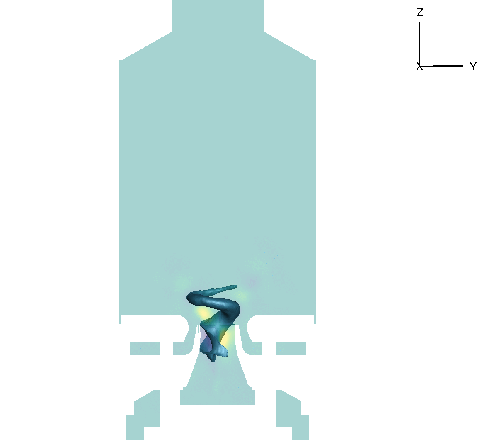

PLATFORM

Abstract
In the scientific model reduction community a variety of decomposition techniques are used for analysis of complex spatio-temporal systems as well as reduced-order model development. Application of these methods to more complex problems require memory usage that often exceeds that of single machines. Parallel Linear Algebra Tool FOr Reduced Modeling (PLATFORM) is a MPI C++ code built upon the ScaLAPACK toolset of distributed Linear Algebra to address these challenges.
Statement of need
In the current development of projection based reduced-order models a basis is generated from a "data matrix". This matrix is sized as (degrees of freedom x number of timesteps). For development problems this is often small enough to be done in the scritping environement. Additionally in the cases where one of the given dimensions of small method of snapshots() can be utilized. (however at wall time costs due to file I/O) However as attempts are made to apply these methods to large problems other tools must be used to overcome the memory and I/O problem. PLATFORM aims to make overcoming these issues easier without users needing to understand the depths of distributed linear algebra computing.
Requirments
PLATFORM is a MPI code and will require a valid MPI installation. The code has been tested with Intel MPI, OpenMPI, and MPICH. PLATFORM is built upon the distributed linear algebra frame work of ScaLAPACK and its associated libraries.
For HPC machines: Depending on the architechture a scientific computing library should availible. (e.g. Intel MKL, IBM ESSL)
For Local Machine Users/Debugging: The ScaLAPACK libraries are availible on NetLib. However it is recommended to use the Intel oneAPI which are publically availible.
Installation
PLATFORM uses the out of source CMake system. The CMake system will do its best to determine your configuration but you may need to specify the compiler to ensure a good build.
Create a build directory and create build configuration
Documentation
The documentation can be viewed on the github pages site or generated locally by running doxygen
Questions or Issues
If you have any questions or issues please open an issue on the github page and I will do my best to resolve it.